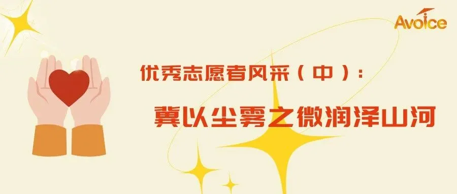

✦
在女性保护的路上，总有很多人在默默付出。Ta们或曾经深陷泥沼，因而更希望向同样身处困境的人们伸出援手；或虽未曾亲身经历但仍能感同身受，希望以点点星火融化暴力的坚冰，让社会听到女性的声音和诉求。
为了相同的追求和理想，许许多多来自世界各地、拥有不同背景的人们加入AWDPI，期待着能以萤烛末光，为身处黑暗的人们照亮前行的道路。在这里，Ta们收获了难忘的实践经历和多元的氛围环境，在一次次挑战中提升个人能力，在一次次碰撞中开拓思想的边界。 让我们继续走进这些渺小而伟大的志愿者，聆听Ta们与AWDPI的故事。
✦
✦

救助支持部 林琪
作为一名社会工作专业的在读生，林琪一直都在关注性别平等观念，并希望通过自己的能力去帮助那些需要帮助的女性。在同专业学姐的介绍下，她申请并加入了AWDPI组织，担任了个案对接处成员、个案对接处负责人、个案监督成员以及小助手的日常运营等多个角色。
加入AWDPI以来，她认为最大的收获就是看到案主在她们的支持帮助下慢慢好转，这个过程给予了她很多的力量。最让林琪印象深刻的经历是看到一位案主在她们的帮助下逐渐好转后，决定加入项目，发挥自己的专业力量，继续为其他人提供帮助。这让她更加坚定了自己在志愿者工作中的使命感和责任感。她也相信，每一个人都可以成为爱的传播者。通过这些活动，她进一步体会到AWDPI以及其他女性保护组织对社会具有重要的意义和价值。作为志愿者，不仅仅要提供实际帮助，更是通过自己的行动传递正能量，唤起社会更广泛的对女性权益问题的关注。
同时，林琪也在AWDPI结识了许多志同道合的伙伴们，Ta们和她一样热爱女性保护事业，共同努力为处于困境女性提供帮助。这种团结和合作让她觉得不再孤单，也让她对女性保护组织和女性权益保护的未来发展充满了希望和期待。林琪期望这些组织能够持续致力于为那些陷入困境的女性提供帮助，她也非常希望看到社会能够更加关注女性权益问题，大众共同积极参与到妇女权益保护的努力中来，通过共同的努力建设一个更加公平和包容的社会。
“希望大家能够抱着一颗真诚的心，为妇女权益保护而努力。”林琪这样说，更是这样做的。“就算是点点微光，汇聚起来也能照亮前方。让我们一起携手共进，为妇女权益保护事业贡献自己的力量！”
救助支持部 马梦圆
马梦圆目前就读于中华女子学院，专业是社会工作。身处女子学院，校园里有90%以上的女孩子，也因此开展了关于性别平等以及反对性别暴力的活动。受学校和所学专业的影响，马梦圆从大一就以个案对接处成员的身份加入了AWDPI，在最近一个月又加入了个案监督处。目前完成了五个个案，均已结案，还有一个个案监督也已顺利结案。
在活动开展的过程中，马梦圆遇到了很多挑战，例如在对接沟通时经常有时差，在对接过程中可能会耽误一些时间等。但正是这些挑战让她进一步提高了自己的沟通水平和工作能力。但每当个案快结束的时候，都是她最印象深刻和最有成就感的时刻。可能她们所做的并不能完全解决案主的某些问题，但是可以提供给对方性知识，还能给对方一种“有人在帮助她，她不是孤立无援的”的感觉。在最后结案的时候，案主甚至可能改变了原本的需求，进入了平和过渡期，再想一想自己的生活要怎样继续。在收集回访时，案主的良好反馈给了她非常大的支持，也让她很有成就感。
对马梦圆来说，AWDPI是她的一次重要实践，这是她唯一从大学初期就接触的组织，一直以来持续陪伴不断成长，这份实践对她的意义也远远大于上课学的书本知识。她认为AWDPI把大家的力量凝聚在一起，发挥了每位志愿者各自的优势。有能力又有富余时间的人会投入到组织中，凝聚力量，再一起去付诸实现、去改变，最终形成1+1>2的效果。
未来，她对女性保护组织和女性权益保护也有很多期望。“首先是性别平等。”可能现在很多人口中的性别平等只是一句口号，或是一个意识，但是马梦圆希望能把这些口号和意识付诸实践。“不论是保护女性劳动者的权利，或是改善职场上、生活中女性遇到的不平等，我们都可以尝试着去提出、去发现、去改变。”
救助支持部 杨钦雯
女性遭受的系统性的性别暴力是杨钦雯从本科以来就有学习和关注的议题，她也一直在想如何用自己的力量为消除性别暴力做点什么。刚好在22年暑期看到了AWDPI的招募，便借着这个机会进入了法律支持处。目前她担任法律支持处的成员和负责人的角色，主要负责为向我们求助的女性提供法律方面的支持、部门内的分案工作。
在众多工作中，让杨钦雯印象最深的是她接手的第一起荷兰个案。当时有一个很紧急的情况需要马上联系警察处理，而她第一次上手缺乏经验，十分焦虑，不知道该如何和案主沟通的情况。所幸当地的警察处理效率很快，她自己也迅速地调整了状态，在联系警察的同时尽力为案主提供情绪支持，及时地帮助案主脱离了危险。在之后提供个案支持的时候杨钦雯还会时不时地想起这一次经历，并借鉴从中获得的经验。在一次次的志愿活动中，杨钦雯也进一步认识到了以救助组织的身份为受暴个体提供支持的限度在哪里。在她看来，AWDPI及其他女性保护组织是消除歧视、暴力，共创多元平等的必要存在，通过这些组织和平台将志愿者汇聚到一起，共同抵抗结构性的压迫。
未来，杨钦雯希望能有更多不同维度的支持，让更多人留在和参与性别公益当中。“在性别公益这条路上努力的人们一定会时不时地感到冲破结构性问题的艰难，对平等和无暴力的期待也可能会因此幻灭。但重要的是我们在注入能量，也留下了自己努力的痕迹。”
项目质量部 钱思宇
钱思宇目前是美国亚利桑那州立大学公共政策与公共服务专业的一名大四学生。目前加入AWDPI学术研究处，负责一些常规报告和专题报告的撰写。她的第一篇常规报告是关于越南女性童婚研究，后来她又对柬埔寨女性进行了研究，都聚焦于东南亚女性。去年，她开始关注一些欧洲的相关专题报告，如比利时华裔女性的职场生存报告、英国的华裔女性的职场生存报告以及前几个月刚刚完成的美国少数族裔护工的生存报告等。
在钱思宇看来，AWDPI等女性保护组织像纽带一样把关注女性议题、性别平等的人聚集起来，在一个科学的、高效的组织管理下，最终释放更多的能量。“我注意到这个组织最开始叫Avoice，主要关注反家暴，但现在已更名为AWDPI，这就体现了组织影响力的提升。”除此之外，钱思宇也看到了更深层次的内涵。“我觉得反家暴是一种基础的、出于对女性自身人身安全需求的回应，而现在 AWDPI则是对一个更加综合性需求的回应，如深入到女性的职场环境等方面。这就是心理需求层次，实现了需求理论中层次上的飞跃。这也是组织不断深入，影响力不断提高的一个侧面的证明。”
未来，她希望看到这些组织拥有更强的影响力，能够真正地让决策者认识到问题的存在，甚至去影响到一个公共政策的制定或实施。
作为志愿者，钱思宇觉得很重要的一点就是要有勇气。志愿者不仅是实践者，也是传播者。如果志愿者切身感受到了需要帮助的女性的痛苦，那么就千万不要犹豫，不要顾忌社会上一些不好的言论，请一定把它转化成实地的实际的行动，发出自己想发出的声音。“Girls can do anything, and can do everything.女性可以在任何一个场景下发挥自己的力量，请千万不要被一些刻板印象所束缚。”只有这样才能切实地影响到更多的女性，让她们能得到更多的各种意义上的赋能。
项目质量部 周璇
周旋初进入AWDPI时是合作拓展部的成员，负责商务拓展的相关工作，后来转为监测评估处负责人。
在2023年，她主要在监测评估处任职。过去一年中，整个组织都经历了较大的架构调整和人事改革，因此作为部门负责人，她的主要工作就是协助政策落地。她和团队成员进行了志愿者管理制度和激励制度的完善，包括制定完备的制度、对各部门负责人进行制度培训和落实等。此外，Ta们部门也和一些存在问题的部门进行对接，辅助Ta们建立新的工作制度和工作手册。之后，她还推进了一个志愿者服务协议推进的工作。
虽然周旋不属于一线对接部门，但她可以作为后援部门去促进整个组织正向发展，推动救助活动的开展。这让她感到非常欣慰和自豪。同时，得益于所处的部门，她可以站在高位角度去看整个组织及不同国家的动向，并意识到非政府组织的推进有着诸多限制和管控，非政府组织的发展还有很长的路要走。“国内NGO的发展基础非常薄弱。社会上存在很多问题，但可能很多是政府难以出面去解决的。因此社会上的供远小于需。”因此她对没有被政府直接管控的女性权益公益组织的发展和壮大十分期待，希望未来这些公益组织能够做更多的事情，填补市场空缺，解决更多社会问题。
同时，周璇也对信息化时代下女性意识的觉醒抱有极大的期待。她发现近些年来因为社交媒体的流行和信息壁垒的打通，她周边的大部分女性都逐渐开始了解父权社会下女性受到的各种隐性歧视，以及作为女性要如何正常地为自己谋求平等的权益。她希望这种意识上的觉醒能慢慢推动社会制度的改变和社会风气的矫正。
项目质量部主管宣雨辰极高地肯定了周璇的工作：“监测评估处负责人，西双版纳的kpop明星，项目质量部的小太阳人物。以高度的热情和责任心游走在各个部门中，积极发挥监测评估处的作用。从双月报到年报，从志愿者激励到处理各部门问题，她忙碌在组织的各个角落。”
英国国家办公室 陈宣月
陈宣月最开始从社会责任家处了解到AWDPI组织的存在，并抱着增加阅历的心态加入了组织。目前她担任英国合作拓展处的副处长，23年主要参与过以反暴力艺术展为主的沟通协作内容。
最让陈宣月有成就感的瞬间是看到定期的AWDPI月报/汇总的时候。她认为自己加入时间还不算很长，真正的贡献也不算多，但是每当她看到整个组织在一点点蓬勃发展且将帮助落实到需要的人身上时，就会为之深深地感到自豪。在她看来，AWDPI以及其他女性保护组织不仅能在行动上帮助需要被帮助的女性，更重要的是能在思想上传递女性主义的价值观，让千千万万的海外女性知道她们遇到困难时有一个可以寻求依靠的地方。“我期待所有女性都能在各个领域做大做强、发光发热，不惧怕显露自己的才华、不被刻板印象洗脑、勇于尝试、勇于坚信自己的能力，永远自信，得到属于自己应有的回报。”
此外，陈宣月也在组织中结识了很多志同道合的朋友。大家虽然背景各不相同，但都有高尚的理念和崇高的抱负，都能以自己的角度和方式为同一目标努力。当无数不同个体都能够加入这样的公益组织并为之贡献自己的一份力量时，实现平等的那一天一定会更快到来。
英国国家办公室 袁思豪
袁思豪最初是通过朋友圈的转发接触到AWDPI，因为他曾经经历过个案，可以说是家暴的间接受害者，所以希望能够尽自己的一份力量呼吁这个社会对女性的关爱和保护。目前袁思豪是英国国家办公室秘书助理和语言支持处的成员。他参与的项目和活动主要包括2023 AWDPI亚裔女性国际发展论坛嘉宾对接，办公室日常工作，组织会议等，翻译慈善组织HSTAR的创始人Ewelina 采访稿，翻译和英国女性救助机构Shakti Women’s Aid负责人的采访稿等。
作为一名男性，袁思豪对于反家暴有着自己的理解。他认为就家暴这件事来说，大多数施害者是男性。所以保护女性的这个意识，应该更多地灌输给男性。女性自己想保护自己是一方面，但最终还是要从施害者这个根源去切断这件事。如果男性没有这个意识，不能主动参与到保护女性的活动中去，那么反家暴这件事是很难实现的。“现在从事女性保护工作的男性还是太少了。而想要真正做到保护女性免受家暴的威胁并最终实现男女平等，男性的力量是不可缺少的。”因此他认为当务之急是向社会上的男性呼吁男女平等的问题，使男性群体也越来越多地了解问题的严重性，进而自发地做到保护女性，尊重女性并最终推动女性地位的提高。
英国综合事务处负责人对袁思豪给予了极高的评价：“袁思豪在海外女性保护项目综合事务处的表现极为出色，深受我们大家的感激。他在综合办公室的角色就如同部门的顶梁柱一般，无论是负责前期的HR工作，还是后期协助举办迎新会和其他各类活动，思豪都展现出了极高的职业素养和勤勉态度。他的工作不仅完成度高，而且总能以高效率和高质量完成任务，为部门树立了极好的榜样。我们希望大家都能向思豪学习，共同推进我们的项目更上一层楼。”
袁思豪期待未来有越来越多的男性力量能够加入保护女性权益的行动中来。“女性权益的终极目标就是做到男女平等。当整个社会不去刻意强调‘女性’这个词汇的时候，才是真正成功的时候。”
保持热情，坚定内心，不断学习，持续贡献属于自己的一份力量，Ta们把帮助带给身处困境的女性，用文字传播女性的声音，将点点星光汇聚成璀璨星河，闪耀出生命的温暖与光芒。
采访｜周文心，杨艺，张思涵
撰稿｜王一然
审核｜秦科
排版/封面｜杨曦真